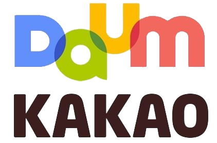

Kakao Corp is the company behind KakaoTalk, which serves as its main platform and flagship application. It was founded in 2006 by Kim Bum-soo, the former CEO of NHN Corporation (the organization that emerged from the Hangame and Naver.com merger) as Kakao Inc. Kakao Corp. (then known as Kakao Inc.) is based in Seoul, South Korea. Manson Yeo and Sean Joh serve as the current Co-CEOs. In August 2013, three of App Annie's Global Top 10 Android games are tied into the KakaoTalk platform—Everybody’s Marble, Cookie Run, and Anipang. With 93 percent of South Korea's users on KakaoTalk, the free downloads of the games Ani Pang and Dragon Flight, which can only be played with a Kakao Talk account, were deemed "national" games. To maintain simplicity across all the provided services, Kakao applications can be purchased and logged in with links to KakaoTalk. Kakao Corp. generated revenue of approximately $200M (USD) through gaming, digital content, mobile commerce, and its marketing channels for brands and celebrities. Kakao Corp. was named a Top Developer on Google's Android Market, and KakaoTalk was chosen as the number one Free SMS App by Cnet. According to a December 2013 App Annie report, Kakao is the world's third top publisher by monthly revenue at Google Play. Kakao Corp. is the number one publisher for iOS and Google Play in South Korea, and KakaoTalk is the number one app for iOS and Google Play revenue in South Korea. KakaoTalk was nominated for the Most Innovative Mobile App Award at the Global Mobile Awards 2014. Kakao Corp. agreed to buy Daum Communications Corp, to cut costs and save time to jump-start growth and gain a listing in Seoul, South Korea.  On 26 May 2014, Kakao Corp. announced that it had decided to merge with Daum Communications—one of Korea's top Internet portals—through a stock swap. Once the two firms were combined the emergent company would have a ₩3 trillion (equivalent to ₩3.11 trillion or US$2.75 billion in 2017) market capitalization, enabling it to lodge a credible threat to Naver, which is South Korea's biggest web portal.The new entity Daum Kakao was valued close to ₩10 trillion (equivalent to ₩10.37 trillion or US$9.17 billion in 2017). In 2015, the company changed its name to Kakao, restoring its pre-merger name. Due to gambling and censorship issues within the Kakao ecosystem, the organization's board of directors ejected Kim-beom-soo as CEO and decided to replace him with Rim Ji-hoon. Kim Beom-soo become the largest shareholder in the new pro forma company with a 22.2 percent stake.Kakao Corp's full suite of apps includes: KakaoTalk, KakaoStory, KakaoTaxi, KakaoAccount, KakaoMap, KakaoDriver, KakaoBus, KakaoMusic, KakaoGroup, KakaoHome, KakaoPlace, KakaoAlbum, KakaoPage, KakaoStyle, and KakaoAgit.